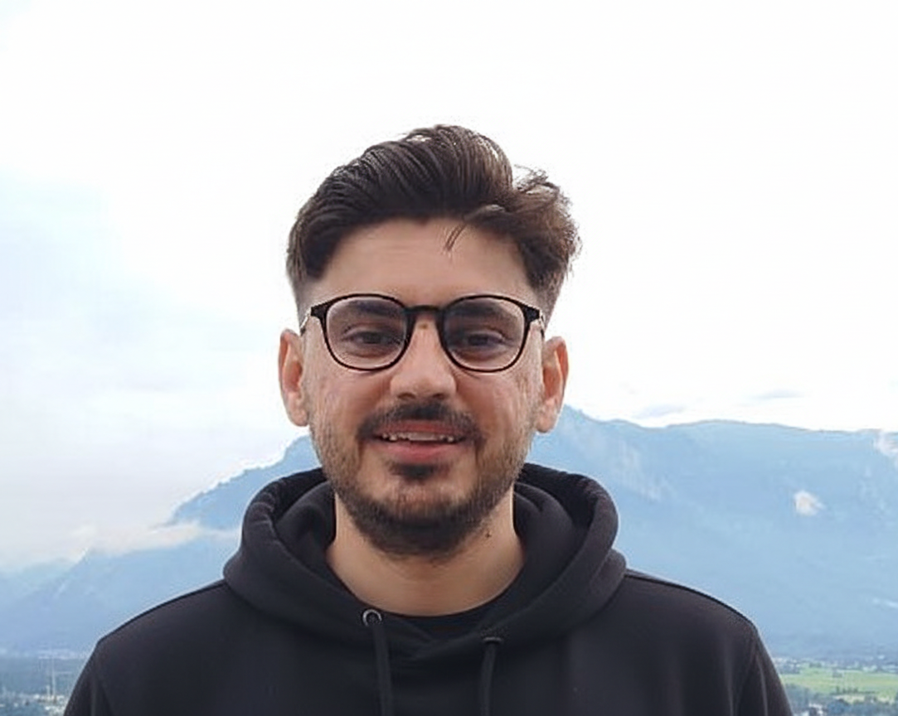
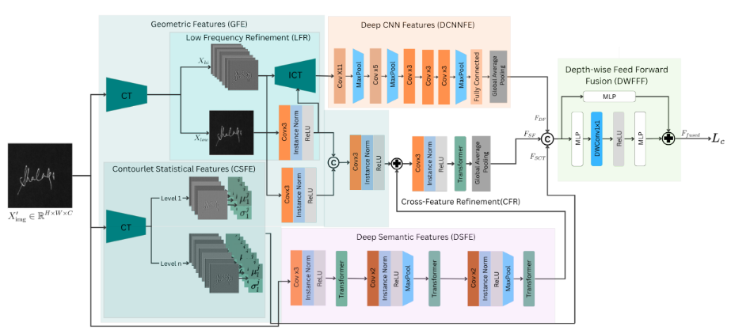

|
 |
Haider AliResearch Assistant, TUKL NUST R&D Lab, SEECS, NUST, Islamabad, PakistanML Research Engineer, Dcube, Islamabad, Pakistan Prev: Research Intern, Computer Vision and Mixed Reality Lab, RheinMain University, Germany Email: hali.msai22seecs[at]seecs[dot]edu[dot]pk CV | Google Scholar | Github | LinkedIn | ORCID |
Research Interests
- Remote Sensing
- Super-Resolution
- Computer Vision
News
- Mar 2026: Second paper accepted at IEEE International Geoscience and Remote Sensing Symposium (IGARSS) 2026, Washington, D.C., USA.
- Jan 2026: Joined SEECS, NUST as a Research Assistant.
- Mar 2025: First paper accepted at IEEE International Geoscience and Remote Sensing Symposium (IGARSS) 2025, Brisbane, Australia.
- Jan 2025: Joined Dcube as a Machine Learning Research Engineer.
- May 2024: Awarded a DAAD grant for “Super-Resolution of Satellite Images” (German Academic Exchange Service, DAAD); summer 2024 research stay in Wiesbaden, Germany.
- Sep 2022: Semi-finalist for the Fulbright Scholarship.
- Jan 2022: Awarded the Gold Medal for the highest GPA in the Software Engineering batch of 2017.
- Jul 2021: Awarded incubation and a PKR 600,000 grant for a research project to develop a smart writing assistant tool for novel writers.
Publications
Industry Projects
-
Real-Time Behavior Detection on Edge Devices | Jan 2025 – Ongoing
Skills: Computer Vision, Edge AI, YOLO, PyTorch, Hugging Face, Gemini Cloud Vision, Ultralytics, Docker, Gradio
Leading the research side of an edge-deployable system for real-time human behavior detection from CCTV camera streams, jointly addressing detection and recognition tasks. Developed an end-to-end, real-time video analysis pipeline to detect and recognize license plates, faces, phone usage, and factory bags, optimized for on-device inference under tight latency and compute constraints.
[Demo] -
Italian Text Embedder | Aug 2025 – Dec 2025
Skills: NLP, Machine Learning, PyTorch, Hugging Face, Sentence Transformers, BERT, Python, NumPy, Docker
Developed a compact text embedder via teacher–student knowledge distillation, achieving 98% score parity with e5-large-multilingual on the MTEB benchmark.
[Code] Awards & Honors
- DAAD grant for "Super-Resolution of Satellite Images" (German Academic Exchange Service, DAAD), May 2024; Summer 2024 research stay in Wiesbaden, Germany
- Semi-finalist, Fulbright Scholarship (Sep 2022)
- Gold Medal for the highest GPA in the Software Engineering batch of 2017 (Jan 2022)
- Incubation and PKR 600,000 grant for a research project to develop a smart writing assistant tool for novel writers (July 2021)
- Balochistan Talent Award for innovative product idea (Dec 2020)
- Winner of the Tech Marathon coding competition organized by USAID (Sep 2019)
Technical Skills
- Remote Sensing & GeoAI: QGIS, Sentinel Hub, Sentinel-2, Multispectral Imagery, Super-Resolution
- Computer Vision: YOLO, Object Detection, Image Segmentation, Super-Resolution, GANs, Transformers
- Frameworks & Libraries: PyTorch, TensorFlow, Keras, Scikit-Learn, OpenCV, NumPy, Pandas, NLTK, Langchain, Hugging Face, Sentence Transformers
- Languages: Python, C++, SQL, JavaScript, Java
- MLOps & Tools: CUDA, Docker, Conda, Git, Jupyter Notebook, VS Code, PyCharm
- Backend & Cloud: FastAPI, Node.js, Express.js, AWS (Lambda, EC2, ECS, S3), MongoDB, VectorDB
Leadership & Teaching
-
Computer Vision Lab Instructor – Advanced AI Bootcamp, NUST (Oct 2023)
Designed and delivered lectures on advanced computer vision concepts, including object detection and image segmentation. Guided students in implementing deep learning algorithms. -
Founder & Tech Lead – Storybook AI-Based Writing Tool (June 2021 – Apr 2022)
Led a team of five to develop software that assists novel writers. -
Online Python Course Instructor – Udemy & Skillshare (Jan 2021 – Present)
Designed curriculum, created content, and managed course publication. Over 4,000 students enrolled.
[Fundamentals of Programming with Python]

|
Non-local Sparse Attention Based Multi-Image Super-Resolution Haider Ali, Maxim Dolgich, Ulrich Schwanecke, Adrian Ulges, Faisal Shafait Accepted at IEEE International Geoscience and Remote Sensing Symposium (IGARSS), 2026, Washington, D.C., USA [Paper] [Code] |
|
 |
GeoCT-SigNet: A Geometry-Aware Hybrid CNN–Transformer Network for Offline Signature Verification Haider Ali, Momina Moetesum, Adnan Ul-Hasan, Faisal Shafait, M. Imran Malik Under review in IEEE Access, 2026 [Paper] |

|
RGB Super-Resolution for Multispectral Remote Sensing Images Haider Ali, Maxim Dolgich, Fabian Stahl, Ulrich Schwanecke, Adrian Ulges, Faisal Shafait IEEE International Geoscience and Remote Sensing Symposium (IGARSS), 2025 [Paper] [Code] |
Design adapted from Prof. Sunghoon Im, DGIST.